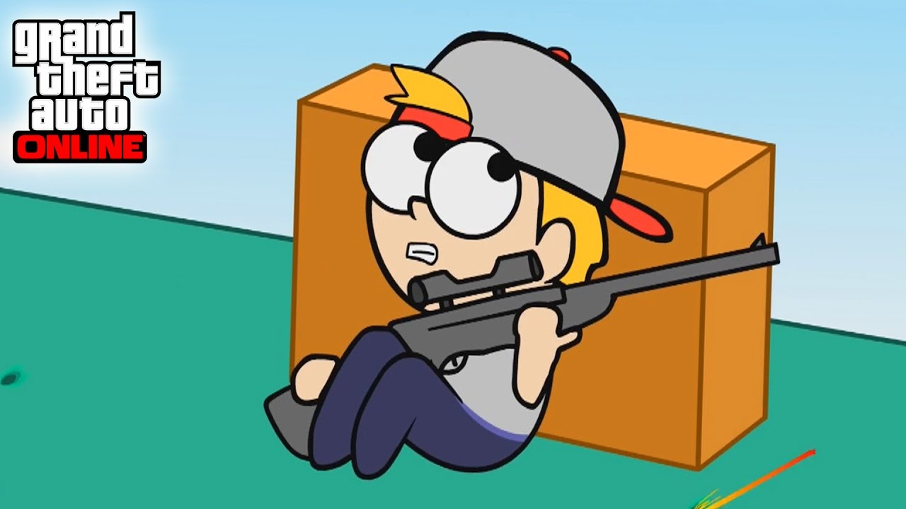

Capitulos Recientes

Dragon ball Ep 1
Hitori Ep 1

Ramen Ep 1

Babysitters Ep 1
Babysitters Ep 2
Dragon ball Ep 2
Hitori Ep 2
Babysitters Ep 3
Ramen Ep2
Dragon ball Ep 3
Babysitter Ep 4
Ramen Ep 3

BeyBlade 1
Babysitter Ep 5
Dragon ball Ep 4
Babysitter Ep 6

Gta5 anime Ep 1

Mickey Ep 1
Hitori Ep 3
Ramen Ep 3
BeyBlade Ep 2
Babysitter Ep 6
Dragon ball Ep 5
Ramen Ep 4
Babysitter Ep 7
BeyBlade Ep 3
Ramen Ep 5
Gta5 anime Ep 2
Ramen Ep 6
Gta5 anime Ep 3
BeyBlade Ep 4
Dragon ball Ep 6
Mickey Ep 2
Hitori Ep 4
Gta5 anime Ep 4
Babysitter Ep 8